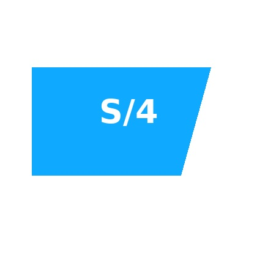
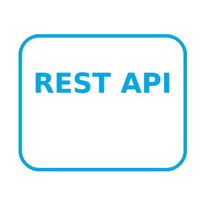
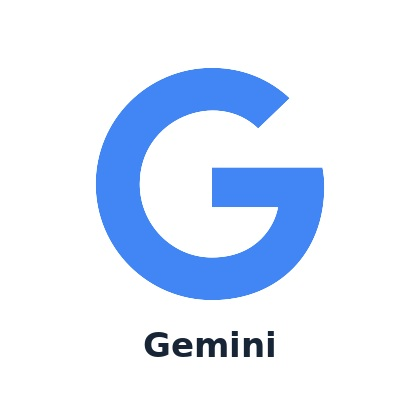

Enterprise Solutions Portfolio
Senior enterprise delivery profile
Complex enterprise work, made clear and executable.
Business analysis, technical product management, and systems integration across requirements, architecture, validation, migration, and release.
Business Analysis
Technical Product Management
Systems Integration
10+
Years across enterprise delivery
6
Reusable solution patterns
30
Platforms and tools
Scroll to explore
01
Requirements
02
Architecture
03
Validation
Technology ecosystem
Recognizable platforms. Clear business use.
Large raster brand marks support rapid recruiter scanning. Hover reveals how each platform fits the delivery model.








Enterprise solution patterns
Six interactive solution previews
Each tile exposes the workflow, business outcome, and delivery pattern without forcing the recruiter into a long case study.
Enterprise Product Configuration
Profile selection → rules → catalog mapping → validated offer
01Profile selection
02rules
03catalog mapping
04validated offer
Business outcomeFaster, more consistent product definition.
Preview solution →
Product Data Integration
Source data → transformation → interface → downstream consumption
01Source data
02transformation
03interface
04downstream consumption
Business outcomeControlled data movement across systems.
Preview solution →
Requirements to Release
Business need → backlog → build → UAT → release
01Business need
02backlog
03build
04UAT
05release
Business outcomeTraceable delivery from decision to production.
Preview solution →
Automated Business Reporting
Source files → extraction → validation → reporting output
01Source files
02extraction
03validation
04reporting output
Business outcomeReduced manual effort and stronger controls.
Preview solution →
Technical Issue Analysis
Observed behaviour → evidence → root cause → resolution
01Observed behaviour
02evidence
03root cause
04resolution
Business outcomeClearer technical decisions and faster recovery.
Preview solution →
Enterprise Data Migration
Source assessment → mapping → load → reconciliation
01Source assessment
02mapping
03load
04reconciliation
Business outcomeReliable transition with measurable data quality.
Preview solution →
Interaction language
Rich motion without visual noise
Phase 1 includes several effects so they can be reviewed together before the final portfolio content is introduced.
Pointer-following light
A restrained radial highlight follows the pointer inside each surface.
Micro-tilt and lift
Cards respond with a maximum three-degree tilt and controlled elevation.
Aurora haze
Slow cyan and violet ambient fields add depth without resembling smoke clouds.
Workflow illumination
Internal stages activate in sequence instead of jumping independently.
Responsive contract
Designed for touch, not merely shrunk.
On mobile, hover becomes tap focus, motion is reduced, spacing remains generous, and every important action stays reachable.